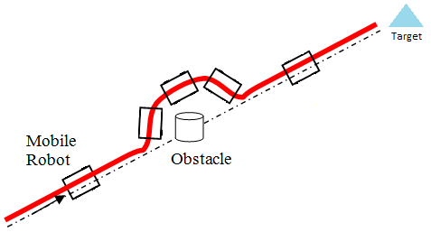
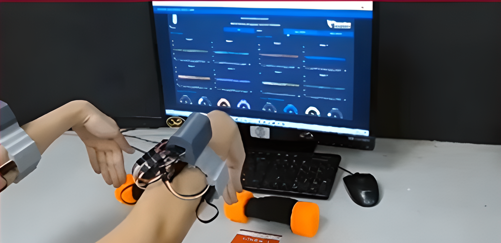
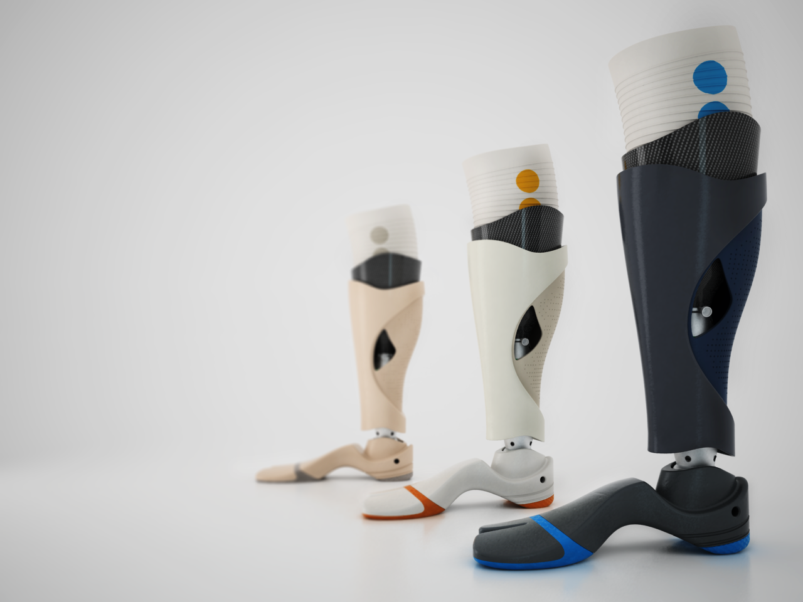
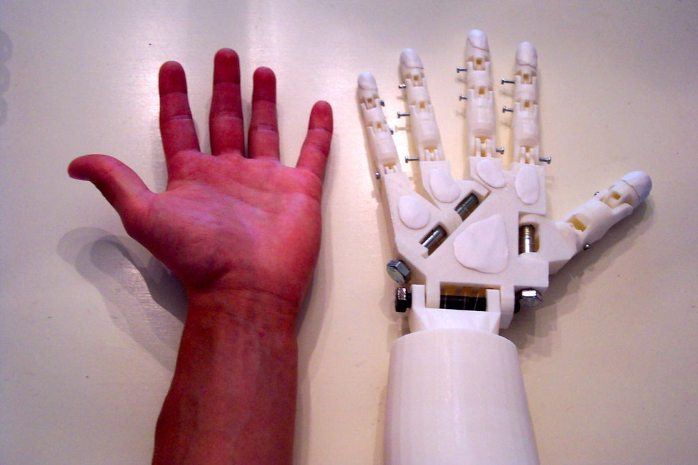
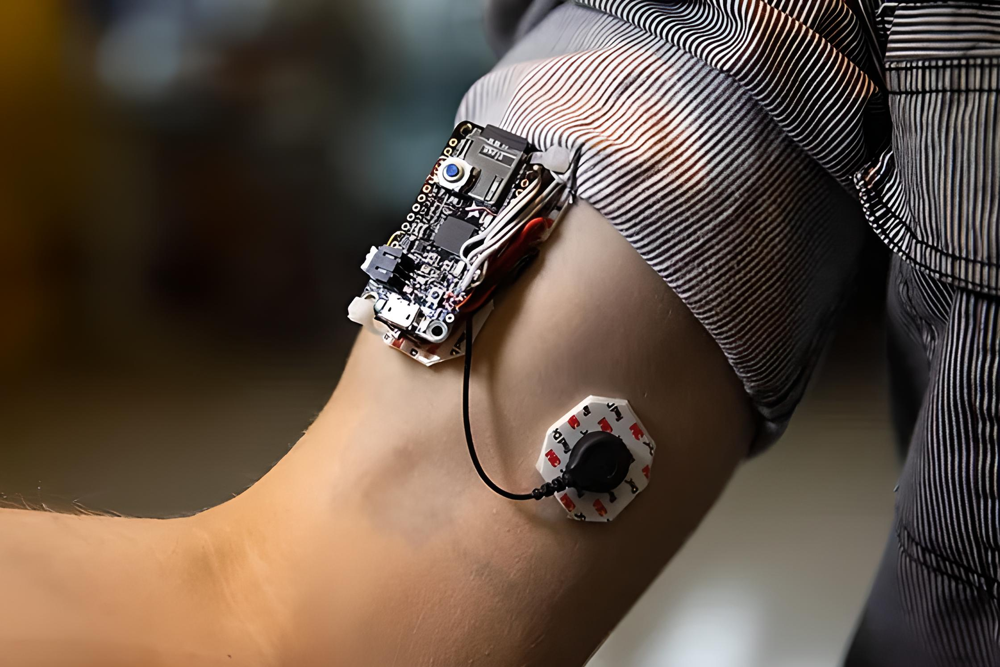
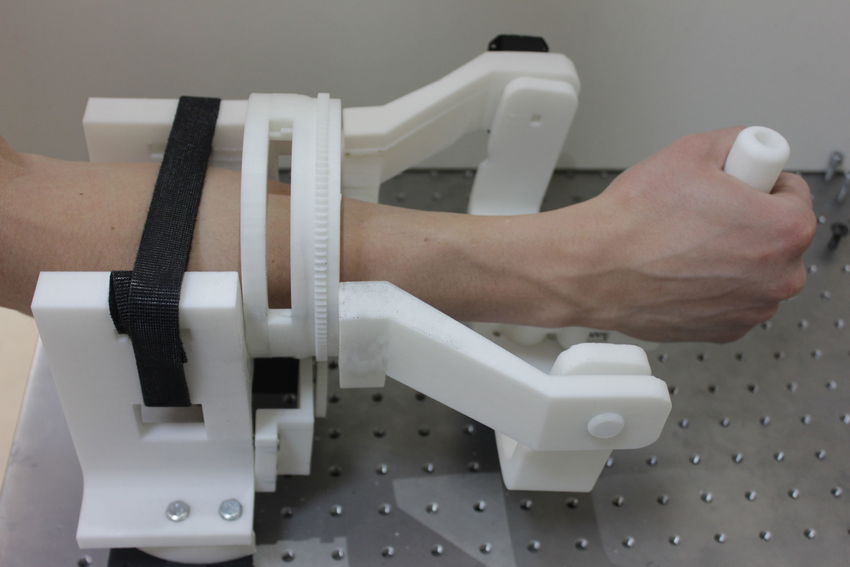

Evasión de obstaculos de un robot móvil basado en funciones controladas de Lyapunov tipo barrera

Sistema portátil de electromiografía superficial para el estudio de sistemas neuromusculoesqueléticos mediante internet de las cosas

Desarrollo de un actuador elástico en serie para una prótesis transtibial considerando un enfoque de optimización en el control.

Desarrollo de un prototipo de prótesis activa para muñeca basado en una plataforma tipo Stewart

Desarrollo de un sistema portátil y multicanal para adquisición de señales electromiografica superficial

Desarrollo de un robot de tres grado de libertad para la rehabilitación de Muñeca
